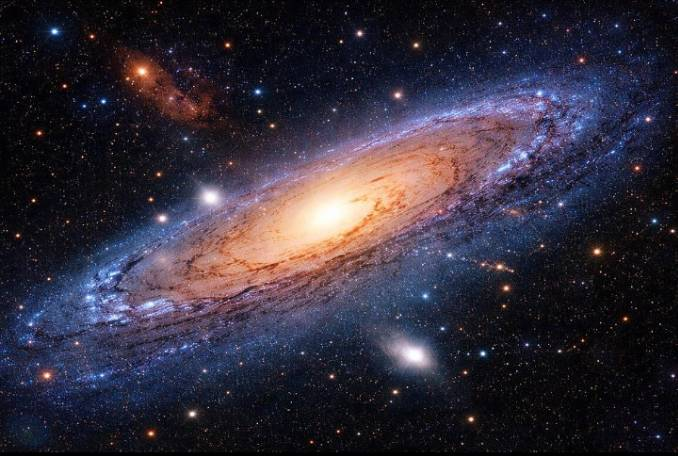

ความรู้เบื้องต้นเกี่ยวกับดาราศาสตร์
ดาราศาสตร์ คือ วิชาวิทยาศาสตร์ที่ศึกษาเกี่ยวกับวัตถุท้องฟ้า ปรากฏการณ์ต่าง ๆ ในอวกาศ และการเปลี่ยนแปลงของเอกภพ วัตถุที่นักดาราศาสตร์ศึกษา ได้แก่ ดาวฤกษ์ ดาวเคราะห์ ดวงจันทร์ ดาวหาง ดาวเคราะห์น้อย เนบิวลา กาแล็กซี และหลุมดำ
มนุษย์ให้ความสนใจเรื่องดวงดาวมาตั้งแต่สมัยโบราณ โดยใช้การสังเกตท้องฟ้าเพื่อกำหนดฤดูกาล บอกทิศทาง และคำนวณเวลา ต่อมามีการพัฒนาเครื่องมือทางวิทยาศาสตร์ เช่น กล้องโทรทรรศน์ ทำให้สามารถศึกษาวัตถุที่อยู่ห่างไกลจากโลกได้ละเอียดมากขึ้น
ความสำคัญของดาราศาสตร์
ช่วยให้เข้าใจโลก ระบบสุริยะ และเอกภพ
ช่วยศึกษาการกำเนิดและวิวัฒนาการของดาวฤกษ์
นำความรู้ไปพัฒนาเทคโนโลยีและการสำรวจอวกาศ
ดาราศาสตร์มีความเกี่ยวข้องกับฟิสิกส์ คณิตศาสตร์ เคมี และวิทยาศาสตร์โลก การศึกษาดาราศาสตร์จึงช่วยให้มนุษย์เข้าใจธรรมชาติของจักรวาล และค้นพบความรู้ใหม่เกี่ยวกับสิ่งที่อยู่ไกลออกไปจากโลก